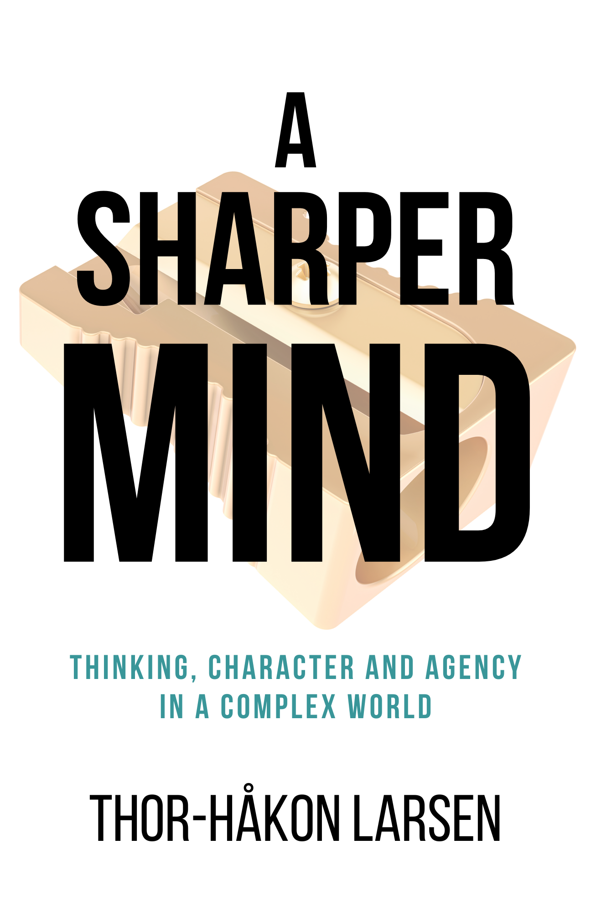

A Sharper MindEt skarpere sinn
Thinking, Character and Agency in a Complex WorldTenkning, karakter og handlekraft i en kompleks verden
The smartest person in the room is not the one who knows the most. It’s the one who can think across domains — connecting ideas that others keep in separate boxes.Den smarteste personen i rommet er ikke den som vet mest. Det er den som kan tenke på tvers av domener — og koble ideer andre holder i separate bokser.
About the BookOm boken
A Sharper Mind draws on more than 100 works across cognitive science, philosophy, psychology, decision theory, and systems thinking to build a single, integrated framework for better judgment. The core argument: the world does not reward specialists or generalists. It rewards those who combine breadth, method, and integration — what the book calls the Generalist’s Trinity. This is not a book report. It is an original synthesis that gives experienced professionals a language for what they’ve sensed but couldn’t articulate: that the real advantage isn’t knowing more, but thinking better. You have roughly 4,000 weeks to live. How you use them depends on the quality of your thinking.
Et skarpere sinn trekker på over 100 verk innen kognitiv vitenskap, filosofi, psykologi, beslutningsteori og systemtenkning for å bygge ett integrert rammeverk for bedre dømmekraft. Kjerneargumentet: verden belønner verken spesialister eller generalister. Den belønner dem som kombinerer bredde, metode og integrasjon — det boken kaller Generalistens Treenighet. Dette er ikke en bokrapport. Det er en original syntese som gir erfarne fagpersoner et språk for det de har forstått men ikke kunnet artikulere: at den virkelige fordelen ikke er å vite mer, men å tenke bedre. Du har omtrent 4000 uker å leve. Hvordan du bruker dem avhenger av kvaliteten på tenkningen din.
What You’ll LearnHva du vil lære
- The Generalist’s Trinity: breadth, method, and integration as the foundation for judgmentGeneralistens Treenighet: bredde, metode og integrasjon som grunnlag for dømmekraft
- How cognitive biases interact with real-world decision-making under uncertaintyHvordan kognitive skjevheter samhandler med beslutninger under usikkerhet
- Why character and agency matter as much as intelligenceHvorfor karakter og handlekraft betyr like mye som intelligens
- Frameworks from Kahneman, Taleb, Housel, Burkeman, and dozens more — synthesized, not summarizedRammeverk fra Kahneman, Taleb, Housel, Burkeman og titalls andre — syntetisert, ikke oppsummert
- A practical model for thinking across domains without becoming a dilettanteEn praktisk modell for å tenke på tvers av domener uten å bli en dilettant
Who This Book Is ForHvem boken er for
For experienced professionals aged 30–50 in consulting, technology, and leadership who seek deeper frameworks for understanding — readers of Housel, Burkeman, Kahneman, and Taleb who want the next level.
For erfarne fagpersoner mellom 30 og 50 innen rådgivning, teknologi og ledelse som søker dypere forståelsesrammeverk — lesere av Housel, Burkeman, Kahneman og Taleb som vil til neste nivå.
DetailsDetaljer
LanguageSpråk
English (translated from Norwegian)Engelsk (oversatt fra norsk)
GenreSjanger
Thinking & Personal DevelopmentTenkning & personlig utvikling
ComparableSammenlignbare
The Great Mental Models (Shane Parrish), Range (David Epstein), Thinking Fast and Slow (Daniel Kahneman), The Psychology of Money (Morgan Housel)
Stay in the LoopHold deg oppdatert
Get notified when this title is available.Få beskjed når denne tittelen er tilgjengelig.
SubscribeAbonner